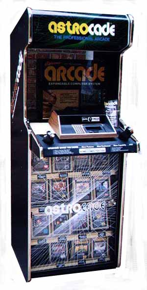

While preparing for the upcoming Phillyclassic show this coming April 26-27 (www.phillyclassic.com) I thought it would be nice to expand upon the large Atari-centric kiosks which would already be coming to the show for people to play and enjoy. Kiosks have a certain alure to them, they bring back fond childhood memories of going to the videogame store each weekend to marvel at the kiosks and the treasures inside, to play the latest game releases and to meet up with your friends for some friendly competition until owner got tired of you hogging up the display and kicked you out, only to come back again another day.
